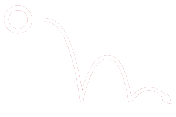
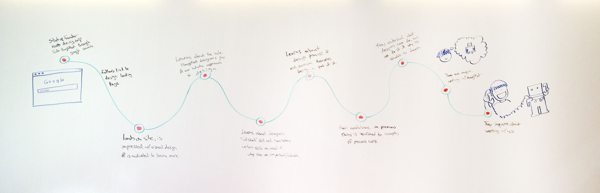
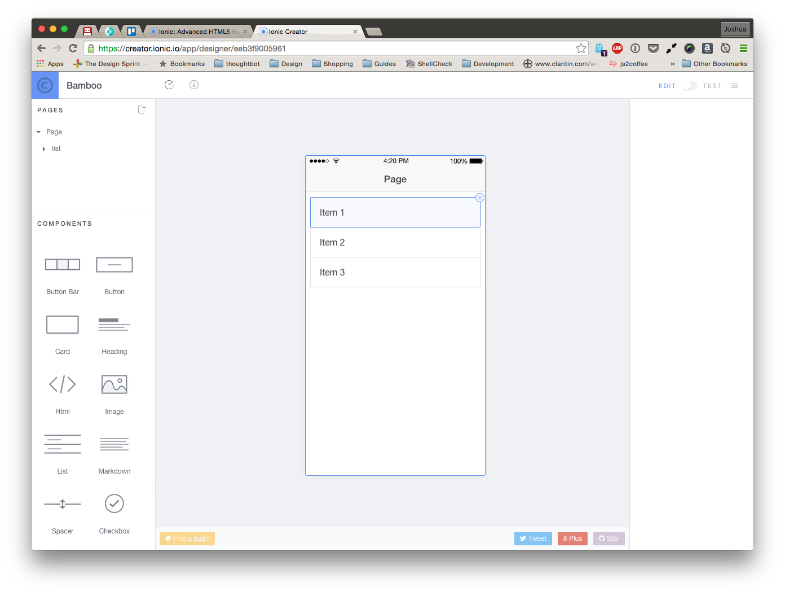

Howdy
I'm Joshua Ogle, designer at thoughtbot
 →
→
 →
You
→
You
Planning products doesn't have to be hard

It’s a well-designed implementation of an idea no one wants.
Designing successful products means observing how real people solve problems now, exploring the context of the situation they are in, and then understanding causality, anxieties and, motivations.
Rent before you buy
Product owners need to make sure the idea is valid
A 5-day sprint
-

Day 1
Understand
-

Day 2
Diverge
-

Day 3
Converge
-

Day 4
Prototype
-

Day 5
User Testing
Roles
Facilitator, Recorder, and Product Owner
Day -1
Preparation
Homework
- What is the business opportunity?
- Who is the market?
- Who is the competition?
Setting up your war room
Whiteboard + markers, sticky notes, pencils, paper
Helpful if you have them
Sharpies, Circle stickers, Timer app
BitTimer

One more thing
A big idea
Schedule about 5 user interviews
30-45 minutes each
Space them out at least 30 minutes apart
Day 1
Understand
Quickly develop context, focus direction,
and expose risky knowledge gaps.
15 minutes
Pitch Practice
2-4 hours
Review Research
- User Demand
- Analytics
- Stories
1 hour
Problem Statement

15 minutes
Backburner Board

15 minutes
Assumption Board
1 hour
Critical Path
1 hour
Card Sorting

Day 2
Diverge
Generate as many ideas as possible.
Draw til your hand falls off.
15 minutes
Pitch Practice
15 minutes
Mind Mapping

5 minutes per round
Crazy Eights

20 minutes per round
Storyboard

Day 3
Converge
Bring all of it together in the Thunderdome
15 minutes
Pitch Practice
1 hour
Identify Conflicts
2 hours
Create Test Table from Assumptions

2 hours
Whiteboard the final Storyboard

1 hour
Review Backburner Board
1 hour
Create Testing Plan
Day 4
Prototype
Crap. We're out of coffee.
Prototyping is about asking reality for feedback.
Write Copy & Get Data
Create Prototype
Clickable Images vs Static HTML Pages




Day 5
User testing
Be wary of feedback that contradicts reaction. Lean in close and watch how people use it — before they think.
Interview & Observe
1 hour
Review What You Learned
2 hours
Make a Plan for Going Forward
Where to find out more